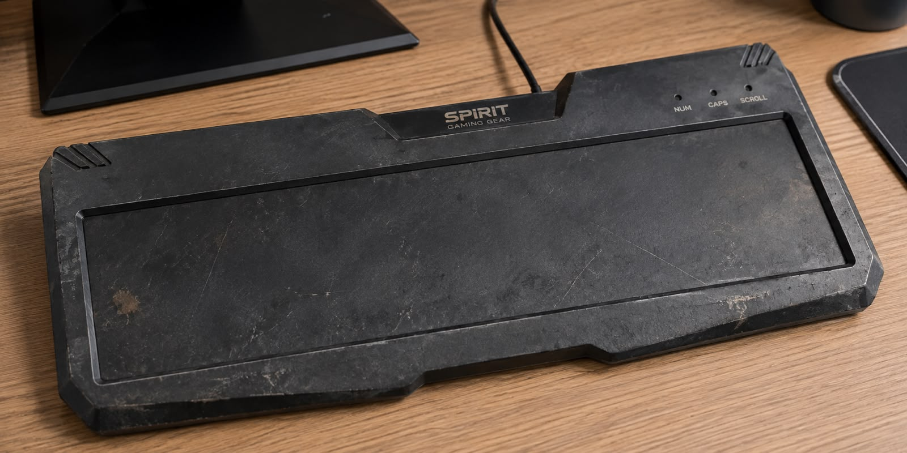

1 - Mouse de gelatina

Mundo Tech Virado do Avesso: Conheça os Mousepads de Gelatina que Viraram Febre na Internet
Quem navega diariamente por redes como TikTok e Instagram já deve ter se deparado com vídeos peculiares de setups gamers e escritórios decorados com algo inusitado: mousepads feitos inteiramente de gelatina sólida de alta densidade. O que parecia ser apenas uma brincadeira de criadores de conteúdo rapidamente se transformou em uma tendência global de consumo, redefinindo os conceitos de ergonomia e estética no universo da tecnologia.
Desenvolvidos a partir de polímeros de gel de borracha termoplástica (TPR) biodegradável, esses acessórios chamam a atenção por sua transparência vibrante, textura extremamente macia e sensação térmica refrescante. Diferente dos tradicionais modelos de tecido ou neoprene, o mousepad de gelatina promete uma experiência sensorial única ao toque e um amortecimento contínuo para o pulso durante longas jornadas de trabalho ou jogatina.
Por que a moda pegou?
O sucesso avassalador do produto se deve a uma combinação de fatores:
Design Sensorial e "Satisfatório": A estética pastel e o efeito squishy (pressionar e ver a peça voltar à forma original) viralizaram em vídeos focados em ASMR e organização de mesa, atraindo o público que busca um visual minimalista e divertido.
Apoio Ergonômico Dinâmico: Ao contrário dos apoios de pulso rígidos, a estrutura gelatinosa se molda com facilidade aos movimentos das mãos, reduzindo pontos de pressão no nervo mediano e auxiliando na prevenção de lesões por esforço repetitivo (LER).
Regulação de Temperatura: O material tem a propriedade natural de manter uma sensação gelada ao toque, um alívio apreciado por quem passa horas com a mão fixa no periférico.
Estilo vs. Desempenho
Apesar do entusiasmo dos entusiastas de decoração, analistas de periféricos e gamers profissionais fazem ressalvas. Por conta do atrito diferenciado da superfície sintética, o deslizamento do mouse não oferece a mesma precisão milimétrica exigida em jogos competitivos do tipo FPS. Além disso, a manutenção exige cuidados constantes com limpeza para evitar o acúmulo de poeira.
Mesmo dividindo opiniões entre o público técnico, o mercado já respondeu à demanda: grandes marcas de acessórios começam a anunciar suas próprias versões com iluminação LED embutida e essências aromáticas. Gostando ou não, a moda dos mousepads de gelatina provou que o mercado de tecnologia pessoal está cada vez mais aberto a unir funcionalidade, conforto e uma boa dose de descontração.
2- Como baixar wi-fi de graça no seu computador
Anunciado o Wi-fi 2.0, agora disponível para dowlound direto!
Você já imaginou poder baixar Wi-Fi gratuitamente no seu computador, sem precisar de roteador, cabos ou planos de internet? Neste tutorial,
você aprenderá uma maneira revolucionária de conseguir internet de forma simples, prática e, claro, totalmente duvidosa.
Prepare-se para descobrir os segredos da tecnologia mais avançada que nunca existiu!
Etapa 1: Prepare seu computador
Ligue o computador e verifique se ele está conectado à tomada. Afinal, sem energia, nem o Wi-Fi consegue trabalhar.
Confira também se o teclado e o mouse estão funcionando, pois você precisará deles para realizar o download.
Caso o computador esteja muito lento, talvez seja necessário reiniciá-lo para aumentar a velocidade da internet.
Etapa 2: Abra o navegador
Acesse o Google e pesquise por “Download de Wi-Fi grátis”. Tenha cuidado para não pesquisar apenas “Wi-Fi”, pois você pode acabar encontrando redes próximas.
Para obter resultados mais precisos, acrescente palavras como “rápido”, “ilimitado” e “100% gratuito”.
Quanto mais específico for o pedido, maior será a esperança de encontrar uma solução milagrosa.
Etapa 3: Escolha o arquivo
Procure um arquivo com o nome “Wi-Fi_Grátis_100%_Real.zip”. Quanto mais longo o nome, maior a tecnologia envolvida.
Observe também se o arquivo possui uma imagem de roteador ou um símbolo de internet, pois isso transmite mais confiança.
Se aparecer uma mensagem dizendo que você foi selecionado para receber internet ilimitada, comemore discretamente e continue o procedimento.
Etapa 4: Inicie o download
Clique no botão de download e aguarde. O tempo pode variar de acordo com a velocidade da sua internet,
o que é um pequeno problema quando você ainda está tentando baixá-la. Enquanto espera, você pode abrir outra aba para pesquisar como acelerar o download de Wi-Fi.
Se o arquivo demorar muito, não desista: talvez a internet esteja sendo compactada antes de chegar ao computador.
Etapa 5: Instale o Wi-Fi
Após o download, abra o arquivo e siga as instruções exibidas na tela. Pode ser necessário clicar em “Avançar”, “Aceitar os termos” e “Instalar agora”.
Se aparecer a mensagem “Wi-Fi instalado com sucesso”, comemore: você acaba de revolucionar a informática.
Caso o programa solicite uma senha, tente utilizar “123456”, pois essa é uma das combinações mais conhecidas do universo tecnológico.
Etapa 6: Teste sua nova conexão
Abra o navegador e tente acessar algum site. Caso a página não carregue, não se preocupe.
Talvez seja necessário baixar mais Wi-Fi para melhorar o sinal.
Você também pode verificar se o computador está conectado a uma rede ou se o ícone de internet apresenta alguma mensagem de erro.

Comprei o pior teclado da internet e ele conseguiu chegar sem nenhuma tecla
Eu já fiz algumas compras questionáveis pela internet. Já comprei produto maior do que imaginava, menor do que imaginava e até coisa que demorou tanto para chegar que eu nem lembrava mais por que tinha comprado. Mas nada me preparou para o que aconteceu dessa vez.
Eu precisava de um teclado novo. Nada muito complicado. Minha única exigência era que ele fosse um teclado e, aparentemente, eu deveria ter especificado também que gostaria que ele viesse com teclas.
Depois de alguns dias esperando, a encomenda finalmente chegou. Abri a caixa e encontrei uma espécie de tábua preta tecnológica. O teclado não tinha uma tecla sequer.
Nos primeiros segundos eu realmente achei que estava olhando para o lado errado
Minha primeira reação foi virar o teclado.
Talvez as teclas estivessem do outro lado. Não faria sentido algum, mas naquele momento eu estava disposto a considerar qualquer possibilidade.
Virei.
Nada.
Olhei novamente dentro da caixa. Revirei os plásticos, procurei algum compartimento escondido e até balancei a embalagem para verificar se havia alguma coisa lá dentro.
Nada de teclas.
Foi nesse momento que comecei a perceber que talvez eu realmente tivesse comprado um teclado sem teclado.
Conectei no computador porque ainda tinha esperança
Mesmo diante de todas as evidências, resolvi conectar o teclado ao computador. Vai saber. Talvez fosse alguma tecnologia nova. Talvez as teclas aparecessem com luzes. Talvez fosse sensível ao toque. Talvez eu estivesse diante do futuro da computação.
O computador reconheceu o dispositivo.
Por alguns segundos fiquei animado.
Passei o dedo onde normalmente estaria a letra A.
Nada.
Apertei onde imaginava que estaria o Enter.
Nada.
Dei dois tapinhas na lateral do teclado, utilizando uma técnica tradicional de manutenção de eletrônicos passada de geração em geração.
Surpreendentemente, também não funcionou.
O design também não ajuda muito
Se pelo menos fosse bonito, talvez eu pudesse colocar o teclado em cima da mesa e fingir que era uma peça de decoração moderna. Infelizmente, nem isso.
O produto parece ter sido desenhado em 2007 por alguém que acabou de descobrir o conceito de "produto gamer". Ele é grande, estranho, cheio de detalhes desnecessários e possui uma enorme área vazia exatamente onde deveriam existir as teclas.
É impressionante. Existe espaço para aproximadamente cem teclas. Só esqueceram de colocar todas elas.
Então decidi procurar as avaliações de outros compradores
Depois de aceitar que provavelmente não conseguiria escrever absolutamente nada com minha nova aquisição, voltei para a página do produto para verificar os comentários.
Foi quando descobri que talvez o teclado sem teclas nem fosse a parte mais estranha dessa história.
Realmente. Nesse quesito não tenho como discordar. É provavelmente o teclado mais silencioso que já utilizei. Principalmente porque é fisicamente impossível apertar uma tecla.
Tecnicamente essa pessoa também está correta. Nenhuma tecla apresentou problema porque nenhuma tecla existe.
Nesse caso eu gostaria apenas de saber se a mãe dessa pessoa realmente recebeu o presente.
Talvez eu tenha descoberto algumas utilidades
Depois de alguns minutos tentando encontrar uma justificativa para não considerar meu dinheiro completamente perdido, comecei a procurar outras funções para o produto.
Descobri que ele pode ser utilizado para apoiar o celular, colocar papéis em cima, ocupar espaço na mesa e iniciar uma conversa extremamente confusa quando alguém visita sua casa.
Também funciona muito bem quando desligado.
Na verdade, pensando bem, desligado ou ligado a experiência é praticamente a mesma.
Entrei em contato com o vendedor
Decidi mandar uma mensagem perguntando se as teclas deveriam ter vindo separadamente.
Expliquei cuidadosamente que havia comprado um teclado e que estava enfrentando uma pequena dificuldade para utilizá-lo, especificamente a ausência de todas as teclas.
Agora estou aguardando uma resposta.
Espero sinceramente que ele não pergunte se eu já tentei desligar e ligar novamente.
Minha avaliação final do teclado sem teclas
Depois de testar o produto por tempo suficiente, consegui chegar a algumas conclusões.
Ele é extremamente silencioso, nunca apresenta problemas de tecla presa e possui provavelmente a barra de espaço mais discreta já criada pela humanidade.
Em compensação, existe um pequeno problema: não é possível escrever absolutamente nada.
Portanto, se você procura um teclado para estudar, trabalhar, programar, jogar, conversar, pesquisar ou realizar qualquer atividade que envolva pressionar uma tecla, talvez seja melhor procurar outro modelo.
Agora, se você procura um objeto preto e estranho para ocupar aproximadamente 40 centímetros da sua mesa, encontrei exatamente o produto que você estava procurando.